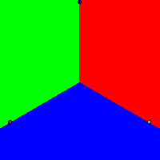

By Warren D. Smith
This page will try to present a concise explanation, including "pretty pictures" (Yee diagrams) of why we claim:
Ka-Ping Yee in 2006 introduced a wonderful way to examine single-winner election methods via computer graphics. Versions 2.0 and above of my program IEVS (Infinitely Extendible Voting Simulator; see example input) support generation of Yee-type pictures and the pictures in this directory were produced by using IEVS.
To explain how Yee pictures work: imagine the N "candidates" are N fixed points in the Euclidean plane. The voters also are points in that plane, but imagine they are random points sampled from a 2-dimensional Gaussian distribution with prescribed variance and prescribed centerpoint (peak location) (x,y). Imagine these voters conduct an election to choose a winner. Voters prefer candidates that are nearer to them ("utility is a decreasing function of voter-candidate distance"). We then color the pixel at (x,y) with the color of the winner (selected from a fixed N-color palette). Do this for every (x,y) and the result is a multicolored picture. You get different pictures depending on the candidate-coordinates, the voting method used, and the variance of the Gaussian.
All election methods ever seriously proposed return the same Yee-picture (at left; the candidate-locations are indicated by the little colored circles)
All those methods perform "optimally," i.e. elect the best winner for society always in this scenario. If they instead were to elect the worst winner, we'd instead get the picture at right.
Almost all election methods ever seriously proposed return the same Yee-picture (at left):
which again represents optimal performance. But not all: the IRV (instant runoff) method returns a rather different (and crazy) picture (using for the voter-Gaussian's σ=196 in each axis direction; the picture is 200x200), at middle. If we go to pentagonal rather than square symmetry (rightmost picture), then IRV behaves better – it always elects the optimal winner in the large #voters limit – but in some ways it behaves even more peculiarly: here there is a pentagonal ring of "tough to call" elections in which IRV (due to voter randomness) occasionally returns a suboptimal winner. The truly tough-call elections are near the center of the pentagon, but that is not the way IRV perceives it.
The points are: (120,126), (64,158), (102,114), (35,164), (66,161), (146,164), (153,59), (115,101), (136,112), (95,59), (117,37), (164,80), (31,153), (170,82). The picture window is [0,199]×[0,199] with the origin in the lower left corner. In all the pictures in this section the utility function is 1/√(12000+Distance²) and the Gaussian has σ=70 in each axis direction.
In the limit of a large number of voters, all of the following voting methods,
The theorem that with honest voters distributed centrosymmetrically about any given pixel, and utility a decreasing function of voter-candidate distance, a Condorcet winner always exists and is the closest candidate to that pixel, apparently was first proved by [Otto A. Davis, Morris H. DeGroot, Melvin J. Hinich: Social Preference Orderings and Majority Rule, Econometrica 40,1 (Jan 1972) 147-157, see thms 1 and 4 and corollary 2]. It also was mentioned by [Richard D. McKelvey: Intransitivities in multidimensional voting methods and some implications for agenda control, J.Economic Theory 12 (1976) 472-482.]
by theorem, will produce a Yee diagram exactly the same as the Voronoi diagram of the points (candidates). That is: the region of the image-plane closest to candidate X, will be the win-region for candidate X (hence colored X's color). I.e. whenever the center of the voter distribution lies closer to X than to any other candidate, then X will win.
Example Voronoi diagram: With candidates located at these 13 random points (69,173), (152,133), (162,46), (27,164), (82,156), (170,30), (116,129), (49,85), (114,101), (72,41), (134,118), (106,111), (81,83), [and the utility function is 1/√(12000+Distance²) and the Gaussian has σ=70 in each direction] the Voronoi diagram is shown at left.
It is a theorem that Voronoi regions always are convex polygons (in 3D, convex polyhedra) containing the candidate of their color.
For the 13 candidates in the Voronoi diagram above, Score voting (also called range voting) using "normalized" scores – i.e. each voter rescales and translates her candidate-utilities so that the worst candidate (in her view) has minimum-allowed score and the best one has maximum-allowed score – yields a picture which is a slightly distorted version of the Voronoi diagram.
Evidently score voting's pro-extremist or pro-centrist bias (if any) is small. If you inspect the picture very carefully, you should perceive a slight pro-centrist bias.
For the 13 candidates in the Voronoi diagram above, Approval voting – assuming now that the voters use the mean candidate-utility as their "approval threshold" – does not yield the Voronoi diagram. As you can see, it obliterates the win regions of many candidates – no matter where the center of the Gaussian voter distribution, those candidates can never win. It plainly seems to favor centrists over extremists in the sense that the candidates with nonempty win-regions mostly are centrally located. [You can tell which candidates by comparing the colors of those candidates (i.e. the colors inside those little circles which represent "candiates") with the colors of the win-regions.] With this voter-behavior, approval has a large pro-centrist bias; but as we saw previously, with certain other voter behaviors approval is unbiased. Under reasonable assumptions about voter behavior, approval will always elect Condorcet winners, and in that case the Voronoi diagram is generated exactly and approval would be completely unbiased, and in our 2D scenarios optimum.
Meanwhile, IRV (honest voters, lefthand picture below) exhibits crazy behavior in which about half the candidates can never win, many others do not lie within their own win-regions, the win regions can exhibit crazy shapes (including severely-nonconvex, disconnected, and non-simply connected...), and there are a lot of "close call" (random dot) regions representing election "near-tie nightmares." Incidentally, IRV supporters have told me they believed it was rare for IRV to fail to elect a Condorcet winner (when one existed). They're wrong: every pixel in this picture where the IRV picture differs in color from the Voronoi pixel, is a counterexample. Observe that IRV gives "outsiders" or "extremists" a large advantage over "centrists" – it is almost impossible for a centrist candidate to win with IRV in this picture, since all the centrist candidates have no win-region (except perhaps the red candidate and then only by benefitting from "random dottiness"). Basically only 8 out of the 14 candidates can win (have non-empty win-region in Yee diagram) and all 8 are "extremists" i.e. non-centrally located. The centrists all get "zeroed out" and IRV never permits them to win. This usually happens with nearly any set of 14 random points in the square; it is not a special characteristic just for our particular choice of 14 points.
A more detailed pictorial examination of IRV.
[Note: if we tell our computer program IEVS to use more voters, then the "randomness" in the pictures diminishes, but it costs a lot more computer time. In all these pictures, each pixel has TopYeeVoters=256 which, roughly, means that each pixel is based on votes from ≈2500 voters. I actually prefer to use this parameter setting as opposed to trying much harder to take the number of voters to ∞, because that way we can see the presence of "near-tie election nightmares" corresponding to "random dottiness" easily in the picture.]:
At right above is plain plurality voting, which is the least expressive common voting method (voters can only indicate their top choice). Observe that it obliterates all the centrist candidates down to zero-win-regions (and the light-blue candidate is not in its own win-region). Only 7 of the 14 candidates can win and every one is an "extremist."
Below are the four voting methods that (with range voting) were the best according to IEVS's Bayesian regret measurements. From left to right, Range+top2-runoff, Approval(mean-based threshold)+top2-runoff, Brian Olson's IRNR system, and Chris Benham's MCA system. (Some of these don't look too good, so how can these methods be the "best"? Well, IEVS also takes account of a vast number of non-geometric scenarios. Just because methods do not perform terribly well in these Yee-type 2D geometric scenarios, does not necessarily prevent good performance in others.) Notice how the top-2-runoff between the top two range voting finishers tends to help correct for distortions caused by "normalization" effects in plain range voting. (It also tends to fix problems caused by "strategic voting," since even strategic voters will vote honestly in the runoff round, but that is not an issue here since these pictures involve honest voters.) Thus the range+top2runoff picture (left below) does look quite good, i.e. greatly resembles the optimum-winner (Voronoi diagram) picture. IRNR looks worse (e.g. several winners not in their own win-regions, some weird shapes) but still not too bad, albeit MCA and Approval+top2-runoff look pretty bad.
Lots more Yee diagrams for more voting methods
{kind=link}